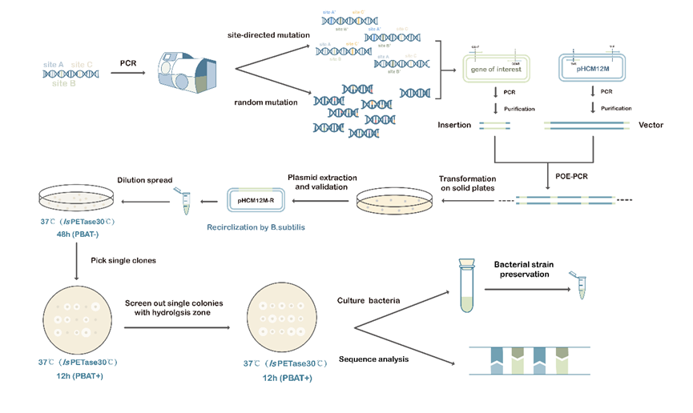
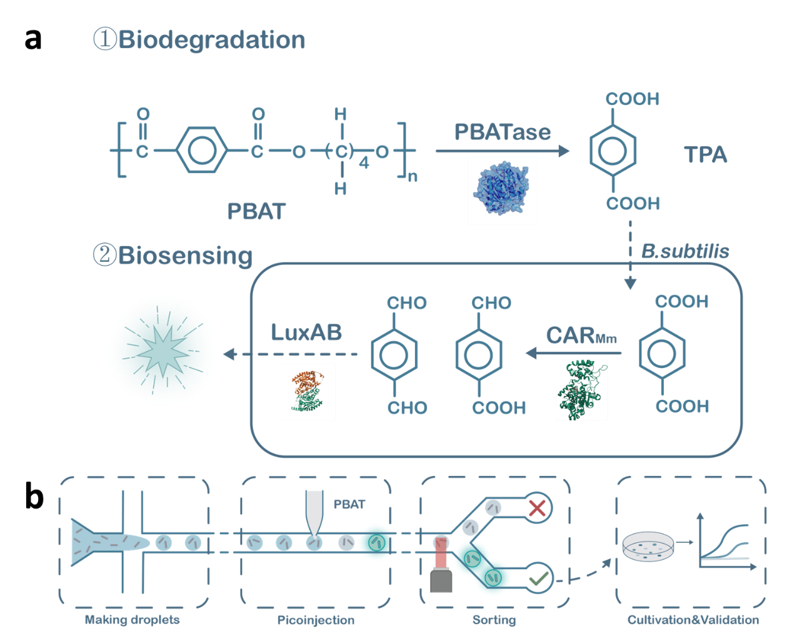
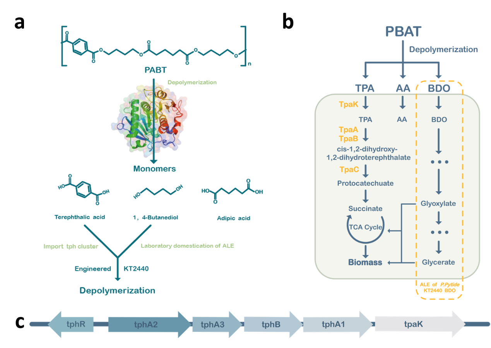

We first established an efficient secretion system within Bacillus subtilis. The signal peptide AprE was
fused to the
N-terminus of the enzymes to enable them to be effectively secreted out of the cells via the Sec pathway
(Figure 1a). In
B. subtilis, chaperones help the signal peptide to fold initially, and then SRP (signal recognition
particle) combines
with the signal peptide to form a complex. Chaperones, FtsY, and SecA together lead the enzyme to the Sec
transport
proteins. After the precursor protein traversing the membrane, the signal peptide is cleaved and degraded,
and the
extracellular chaperones assist the protein to form a stable conformation[1,
2]. Then we performed Prolonged Overlap
Extension PCR (POE-PCR) to separately polymerize the sequences of the three enzymes and the linearized
pHCM12M vector
into polymers (Figure 1b)[3], which were then transformed into Bacillus subtilis. To verify whether the
enzymes were
secreted out of the cells, we cultivated the bacterium on the plates with polycaprolactone (PCL), which can
be
hydrolyzed by lipases, esterases, keratinases and so on, commonly serving as a model substrate for assessing
the
extracellular secretion of hydrolases[4]. The observation of hydrolysis zones on the plates indicated
successful
expression and secretion of the enzymes.
Figure 1. (a) An efficient secretion pathway in Bacillus
subtilis. In the pathway there
is the Sec signal peptide AprE separately with the genes of interest (GOI) requiring secretion downstream of
it.
GOI include
IsPETase,
BsLipA, and Lipase1028. Downstream of the GOI is the 6×His tag for
the
purification of the protein;
(b) Flowchart of the prolonged overlap extension PCR (POE-PCR) process
for
the transformation of GOI into Bacillus subtilis SCK6. We obtain the linearized vector
and
DNA fragment with homologous arms by PCR reaction. During POE-PCR, GOI and the vector fragments are used
simultaneously as primers and templates to obtain linear multimeric DNA, which is transformed into the super
competent
Bacillus subtilis SCK6 and circularized later to form recombinant plasmids. Compared to
plasmid, multimeric DNA exhibits higher transformation efficiency when transformed into
Bacillus
subtilis[3].

Figure 2. Construction and screening strategies for mutation libraries.
Pathway design of a FADS-based ultra-high-throughput evolution of PBAT-degrading enzyme
The method of screening by observing hydrolysis zones is common, straightforward, cost-effective, and simple
to
implement. However, its efficiency is limited a lot because of following drawbacks: (1) its throughput is
low (~104)[5]
; (2) human bias when selecting colonies may happen; (3) the measurement of hydrolysis zone size may lead
to errors
that affect the accuracy of the screening process; (4) the hydrolysis zones may overlap, making it
challenging to
accurately measure the size of each colony. Therefore, a high-throughput and precise screening method for
PBAT-degrading
enzymes in B.subtilis is needed.
A biosensor system for sensing TPA has been developed (Figure 3a)[6]. In this system, carboxylic acid
reductase (CARMm)
from Mycobacterium marinum and the luciferase LuxAB from Photorhabdus luminescense have been transformed
into Bacillus
subtilis. TPA can enter the cells and be reduced to aldehyde by CARMm. Then, LuxAB utilizes the aldehyde as
a substrate
to produce the corresponding acid, generating bioluminescence. By measuring the bioluminescence intensity at
482 nm,
semi-quantitative detection of TPA can be achieved[6]. Our goal is to combine this system with FADS, which
couples the
activity of each variants with the fluorescence intensity, and finally facilitates high-throughput screening
(~107)
(Figure 3b) [5, 7].

Figure 3. Biosensor-based TPA detection coupled with bioluminescent FADS
screening.(a) An enzyme-coupled biosensor for detecting TPA produced by PBAT degradation. (1)
PBAT
enzymes degrade
PBAT, releasing
monomer molecules including TPA, BDO, and AA. The structure of the PBAT hydrolase is derived from our
evolutionarily
screened ND. (BDO and AA are not shown). (2) TPA can be reduced by CARMm to the corresponding dialdehyde
and
monoaldehyde (ligand molecule PPTNi not shown). These aldehydes serve as substrates for LuxAB to
generate
corresponding
acids and emit fluorescence, achieving bioluminescence. The excitation wavelength of the LuxAB reaction
is
482 nm, which
belongs to the visible cyan light spectrum. (b) Schematic diagram of FADS screening process. Bacillus
subtilis is
encapsulated in microfluidic droplets and incubated to allow cells to fully express PBAT hydrolase,
CARMm,
and LuxAB.
After a period of incubation, PBAT is injected into the microfluidic droplets to generate a fluorescent
signal.
Fluorescence signal detection and sorting are then performed to separate target droplets from non-target
droplets.
Droplets with strong fluorescence signals typically contain the target enzymes or cells with specific
biochemical
reaction products, while droplets with weaker fluorescence signals are considered non-target droplets. A
highly active
PBAT enzyme can degrade more TPA and achieve a higher level of luminescence.
Engineered KT2440 Strain Construction and ALE-Derived Mutant Isolation for TPA and BDO
Utilization
To upcycle PBAT, a multifunctional P. putida KT2440 strain was engineered to secrete PET hydrolase and
degrade PBAT
hydrolysates TPA and BDO (Figure 4a). The engineering involved: (1) transforming the tph gene cluster into
KT2440 for
constitutive expression; (2) adaptive laboratory evolution (ALE) of KT2440-tph to utilize TPA and
1,4-butanediol; (3)
transforming evolved mutants into KT2440-tph. The tph gene cluster from Pseudomonas stutzeri TPA3 was
electroporated
into KT2440, enabling TPA degradation (Figure 3b and 3c). ALE experiments with wild-type and engineered
strains in
mineral salt medium supplemented with 1,4-butanediol and TPA showed increased growth rates, indicating
enhanced
utilization of BDO and TPA. Further ALE is planned to improve degradation efficiency.

Figure 4. (a) The construction process for engineered KT2440.The
engineering modification of Pseudomonas putida KT2440 mainly consists of three parts: (1) transforming
the tph gene
cluster into KT2440 to obtain KT2440-tph and expressing the gene cluster constitutively; (2) adaptive
laboratory
evolution (ALE) of KT2440-tph to enable the utilization of TPA as carbon sources and a certain concentration
of
1,4-butanediol; (3) transforming the mutants into the evolved KT2440-tph. (b) An engineered P. putida strain
with
abilities of PBAT depolymerization and co-degradation of TPA and BDO. Schematic of a single engineered
strain
Pseudomonas putida KT2440 capable of degrading PBAT and co-degrading its degradation products TPA and BDO.
The entire
tph gene cluster was transformed into KT2440 and constitutively expressed to achieve co-degradation of TPA
and BDO. (c)
The feature of tph cluster. A tph cluster containing genes encoding the transcriptional regulator (tphR),
tpa
transporter (tpaK), tpa 1, 2-dioxygenase (tphA), and 1, 2-dihydroxy-3, 5-cyclohexadiene-1, 4-dicarboxylate
dehydrogenase
(tphB).
Reference
-
[1] M. Hao, W. Hui, L. Shao, C. Shi, F. Lu and H. Zhang, Improving the Ability of
Bacilluslicheniformisto Produce
Alkaline Protease by Inactivating Sec Pathway Repressor Protein and Extracellular Proteases, China
Biotechnology, 44, 39-47, (2024).
DOI: https://doi.org/10.13523/j.cb.2307018
-
[2] J. de Keyzer, C. van der Does and A. J. M. Driessen, The bacterial translocase: a dynamic protein
channel
complex, Cellular and Molecular Life Sciences, 60, 2034-2052, (2003).
DOI: https://doi.org/10.1007/s00018-003-3006-y
-
[3] U. Canosi, G. Morelli and T. A. Trautner, The relationship between molecular structure and
transformation
efficiency of some S. aureus plasmids isolated from B. subtilis, Molecular & general genetics :
MGG,
166, 259-67, (1978).
DOI: https://doi.org/10.1007/bf00267617
-
[4] S. M. Satti and A. A. Shah, Polyester-based biodegradable plastics: an approach towards sustainable
development,
Letters in Applied Microbiology, 70, 413-430, (2020).
DOI: https://doi.org/10.1111/lam.13287
-
[5] Y. Joho, V. Vongsouthi, C. Gomez, J. S. Larsen, A. Ardevol and C. J. Jackson, Improving plastic
degrading
enzymes via directed evolution, Protein Eng Des Sel, 37, (2024).
DOI: https://doi.org/10.1093/protein/gzae009
-
[6] T. Bayer, L. Pfaff, Y. Branson, A. Becker, S. Wu, U. T. Bornscheuer, et al., Biosensor and
chemo-enzymatic
one-pot cascade applications to detect and transform PET-derived terephthalic acid in living cells,
iScience, 25, 104326, (2022).
DOI: https://doi.org/10.1016/j.isci.2022.104326
-
[7] Y. Qiao, R. Hu, D. Chen, L. Wang, Z. Wang, H. Yu, et al., Fluorescence-activated droplet sorting of
PET
degrading microorganisms, J Hazard Mater, 424, 127417, (2022).
DOI: https://doi.org/10.1016/j.jhazmat.2021.127417


 Home
Home

 Project
Project

 Lab Notebook
Lab Notebook
 Team
Team